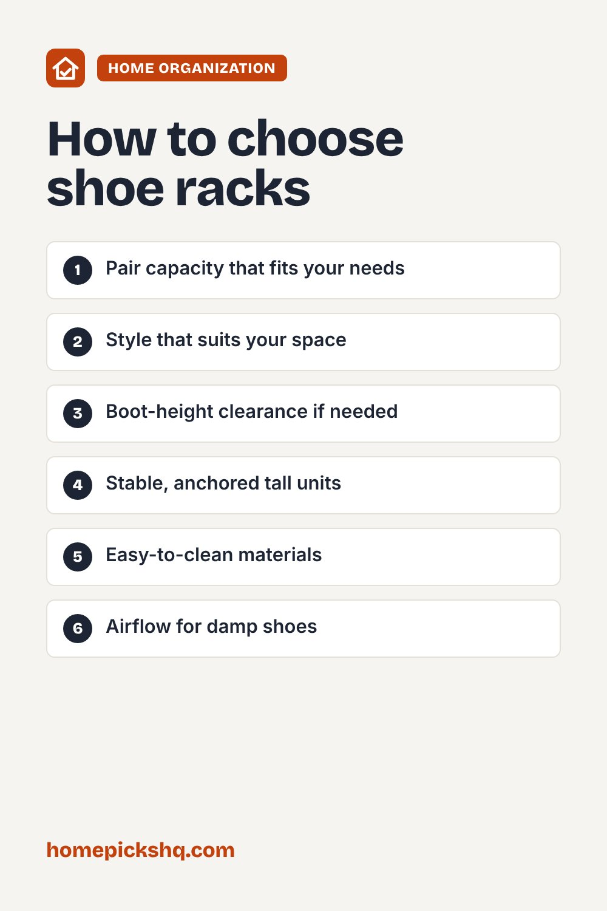

Best Shoe Racks: Entryway Storage That Works

How we write these guides: we research manufacturer specifications, expert guidance, and owner feedback. We do not claim to have lab-tested every product. If product links are added, some may be affiliate links; see our disclosure.
Shoes pile up quickly by the door. A shoe rack keeps pairs together, protects floors, and makes mornings easier. Choosing the right style depends on your space and how many pairs you own.
Count your pairs
Count the shoes you want to store by the door and check the rack's pair capacity. Leave room for growth. Think about shoe types, because boots and sneakers need different spacing.
Styles
Stackable racks are flexible and can be expanded. Bench-style racks add a seat for putting on shoes. Over-the-door racks use no floor space and suit small apartments. Wall-mounted racks are slim and good for narrow halls. Closed cabinets hide shoes and often have tilt-out drawers.
Materials
Metal is durable and easy to clean. Wood looks warm and can carry more weight. Plastic is light and resists moisture. Add a boot tray for wet shoes, and look for slatted shelves that let air circulate.
Space and stability
Measure the available width and depth, and make sure doors and walkways stay clear. Tall units should be stable, and anchored to the wall if they could tip, especially in homes with children.
Keep it tidy
Set a rule of one pair per slot, and rotate seasonal shoes to another closet. Wipe the rack occasionally to remove dirt.
Quick buying checklist
- Pair capacity that fits your needs
- Style that suits your space
- Boot-height clearance if needed
- Stable, anchored tall units
- Easy-to-clean materials
- Airflow for damp shoes

Frequently asked questions
How many pairs fit on a rack?
It varies widely. Check the product's stated pair capacity.
Should I store shoes in a closed cabinet?
Closed cabinets hide clutter, but make sure shoes are dry first and the cabinet is ventilated.
What fits a small entryway?
Over-the-door or wall-mounted racks use little floor space.